氣息 · 吸氣
聞花香：把氣吸到肚子裡
- 手輕輕放在小腹上，肩膀放鬆。
- 想像前面有一朵花，用鼻子慢慢吸 4 拍，聞到花香。
- 肩膀不動，只有小腹微微鼓起。
算做到：吸氣時肩膀沒有往上抬，吸完還能安靜數到 4。
我自己的口令與圖解，加上外部權威來源的示範影片，一個動作對一段片子。 這一頁是給你個人備課和對照用的，影片全部用嵌入方式引用，不下載、不轉載。
影片要連網，請用資料夾裡的「開啟網站.command」開，不要雙擊 HTML 檔（會黑屏）。
這幾張跟十大基本功的段落一一對應。
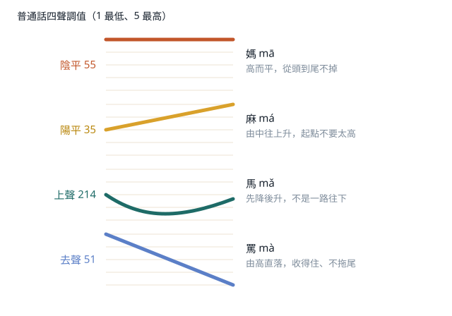
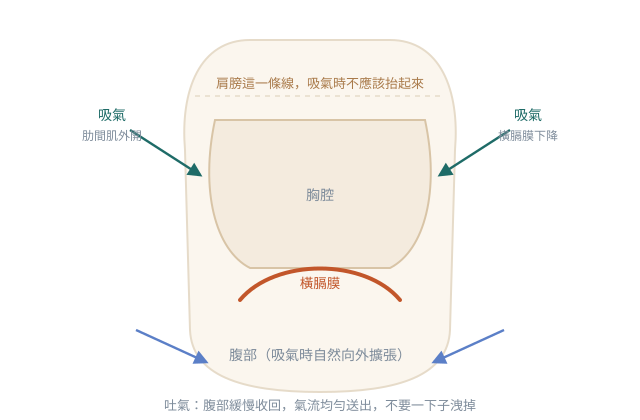
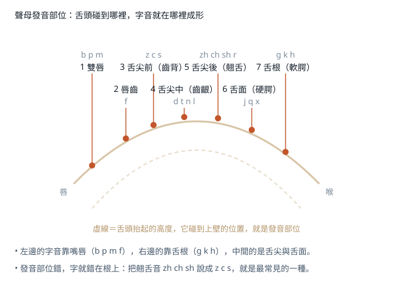
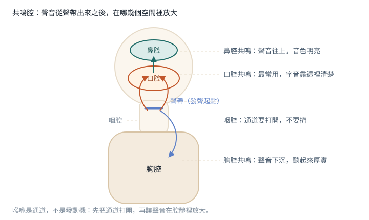
自己畫的圖做了簡化。要講「喉嚨裡到底發生什麼事」的時候，用下面這幾張解剖圖。
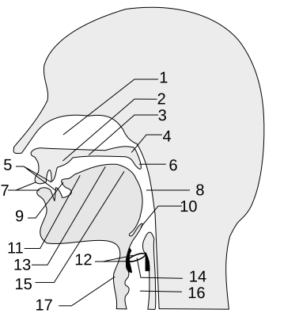
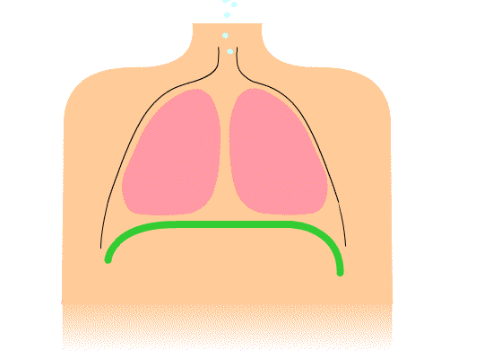
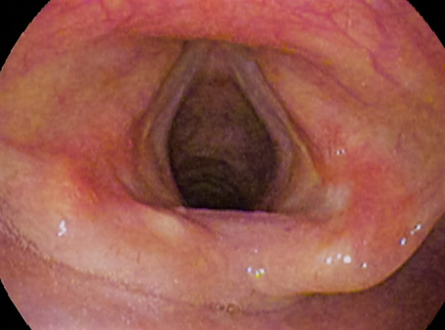
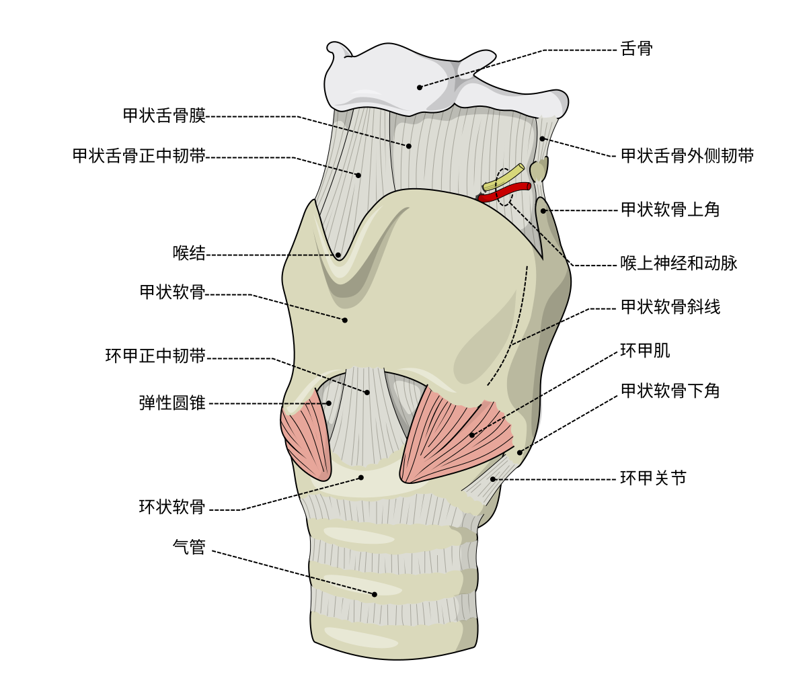
上面那幾張是原理圖，這 16 張是「動作長什麼樣子」。
算做到：吸氣時肩膀沒有往上抬，吸完還能安靜數到 4。
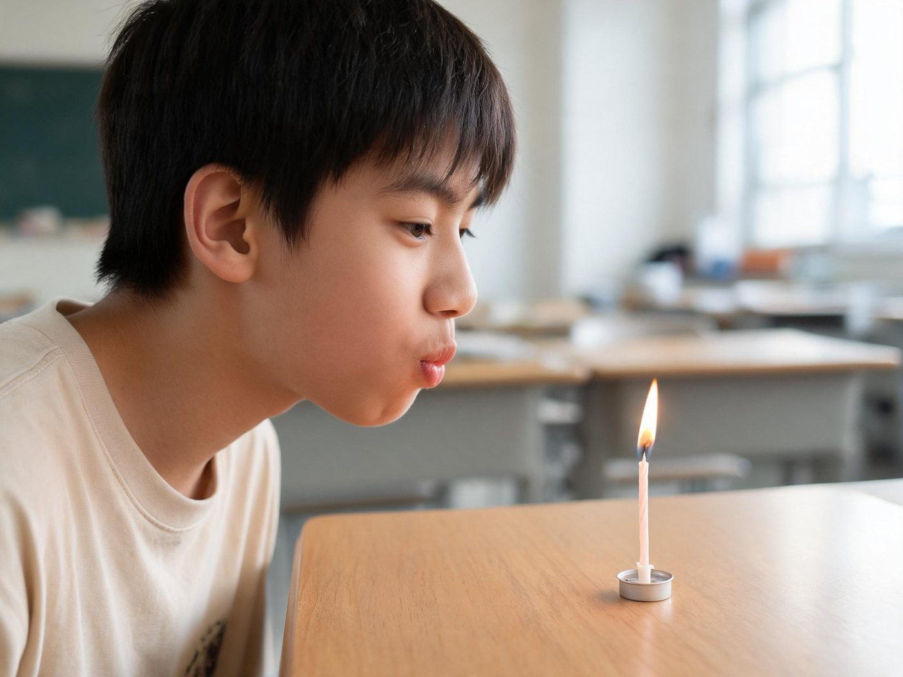
算做到：吹的時候不彎腰、不壓喉嚨，而且兩次的長短明顯不同。
算做到：吐氣到第八拍還是均勻的，不是一開頭就洩光。
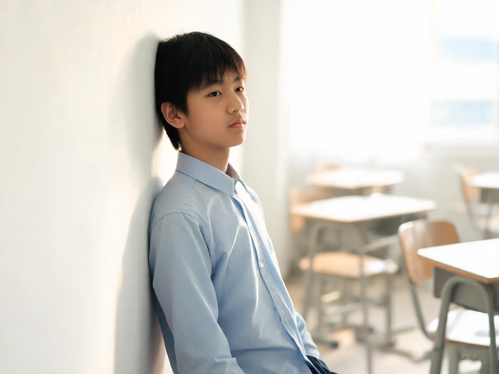
算做到：離開牆之後不塌腰、不挺肚，而且還能正常呼吸。
算做到：書不掉；說完一句話，書還在頭上。
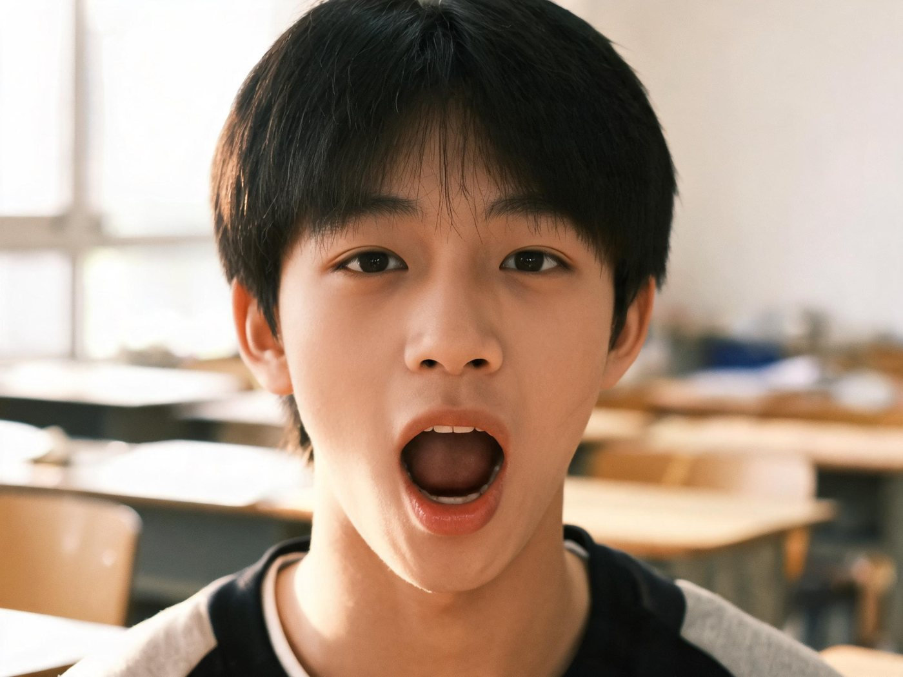
算做到：只是下巴在動，脖頸不縮、肩膀不抬。
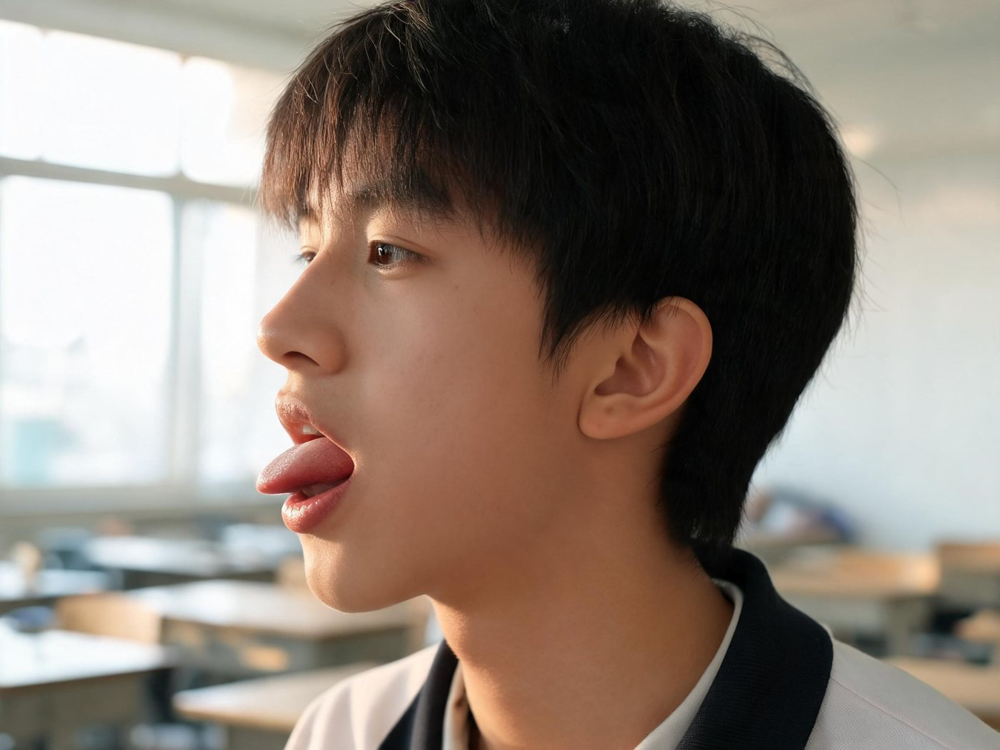
算做到：聲音清脆，不是含著口水在嘴裡響。
算做到：旁邊的人只看嘴形，也能猜出你在說什麼字。
算做到：摸得到振動，而且喉嚨不緊不痛。
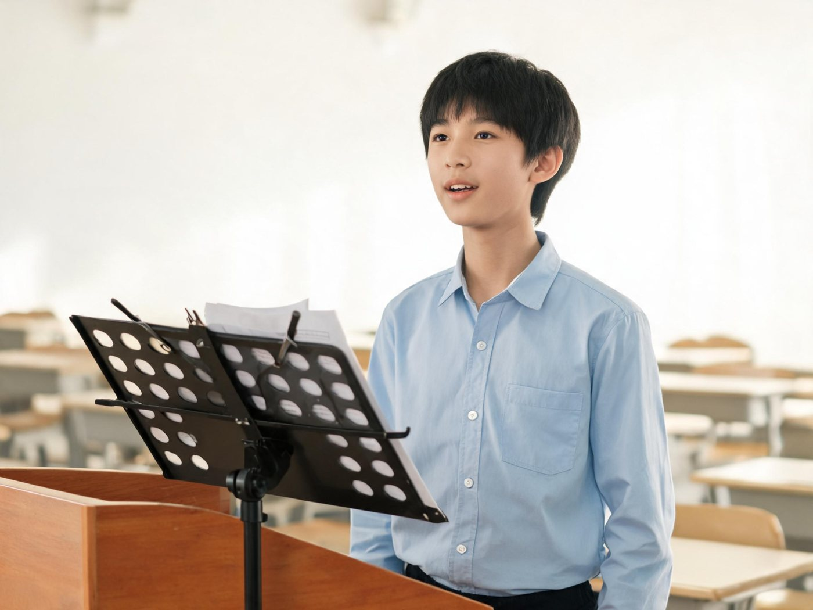
算做到：抬頭的時間多過低頭的，聽起來像在跟人說話。
算做到：沒有「噗噗」的噴氣聲，音量穩定不忽大忽小。
算做到：眼神在每個點上有停留，不是一直左右掃。
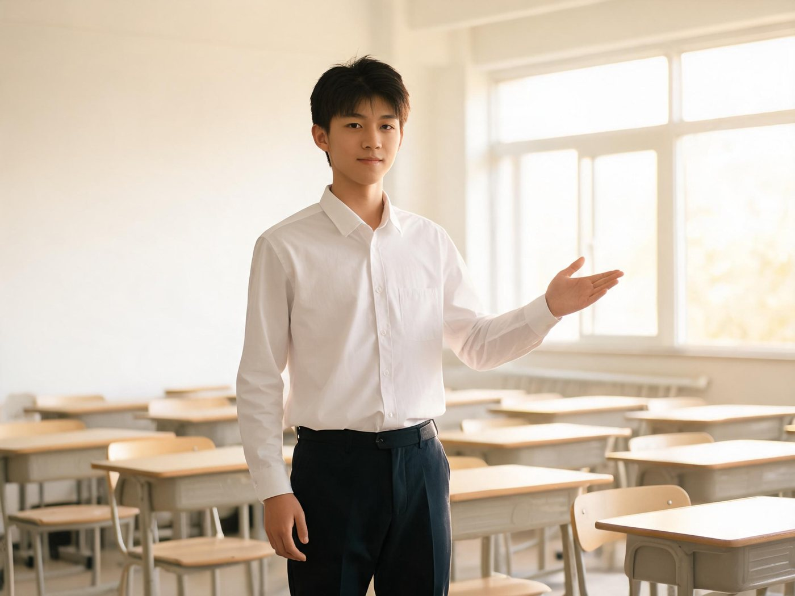
算做到：手勢和句子同步，不是一直在重複同一個動作。
算做到：不看稿也說得出那三句，停頓干淨。
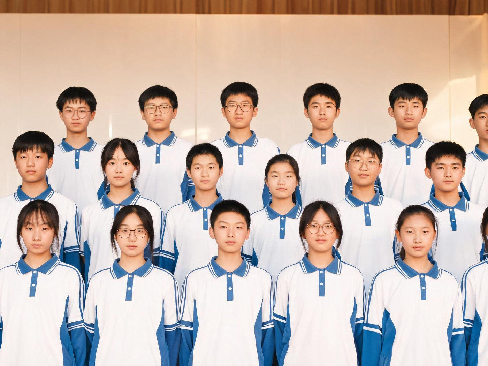
算做到：起句聽起來像一個人；收句沒有誰還在響。
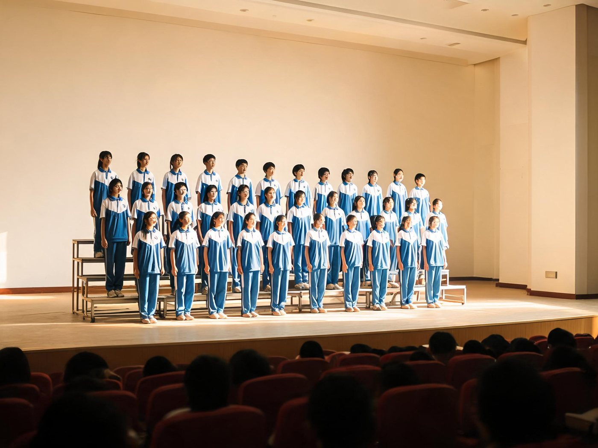
算做到：不是愈上層愈大聲；全組聽起來是一個聲音。
按基本功分組。點卡片上的播放鍵就在這裡播，換片不用先關掉上一段。
這幾個要另外開新視窗（有些要登入），所以不放播放器，只留入口。
影片版權屬於原頻道／機構；外部圖片多為 CC BY-SA 或公有領域，作者與授權標在各張圖下面。只作自己課堂用，不公開、不轉發；放進對外教材前先確認授權。